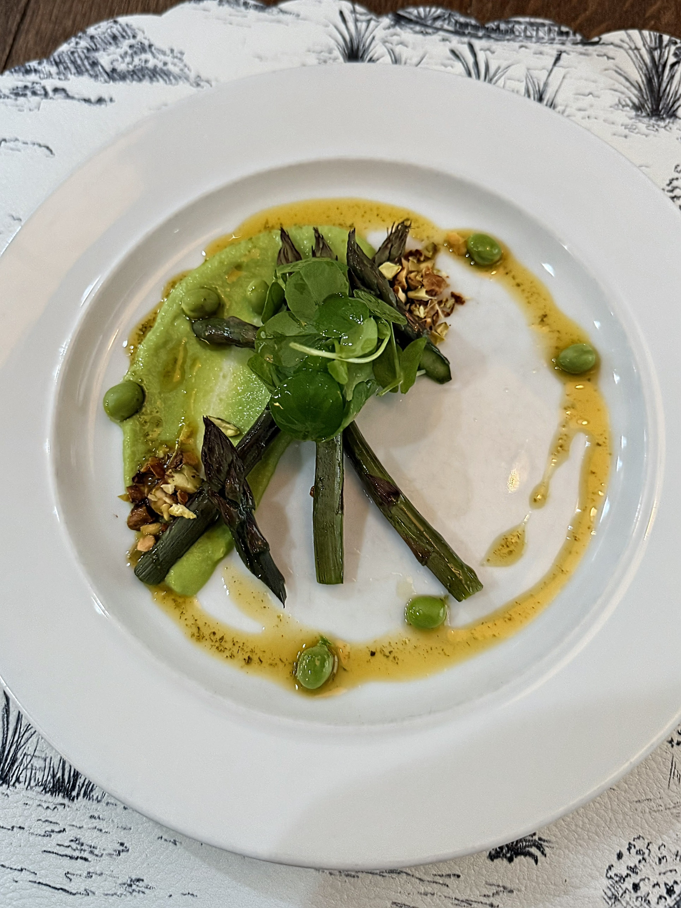
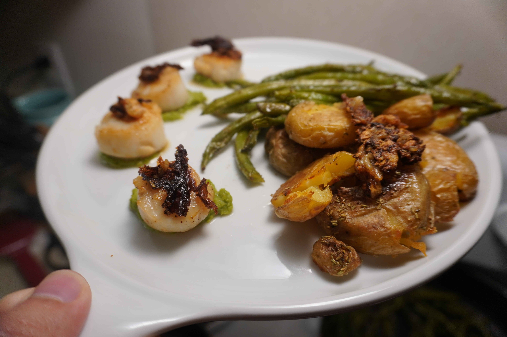
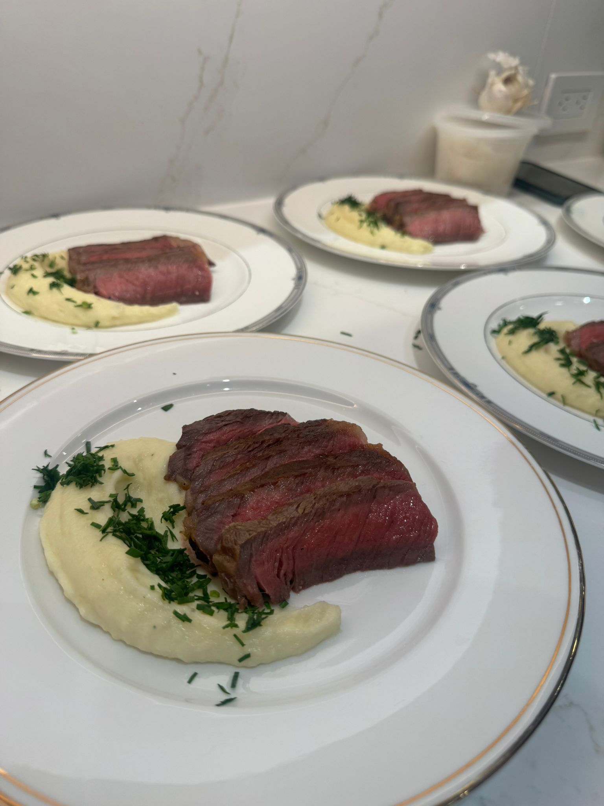

Personalized Private Dining
Each experience is tailored around your occasion, guest count, preferred style, and the kind of evening you want to create.

Abi The Chef creates personalized private dining experiences rooted in seasonal ingredients, thoughtful presentation, and warm hospitality. From intimate dinner parties to holiday gatherings, every menu is tailored to your tastes, dietary preferences, and occasion.
Abi brings the quality and care of a refined restaurant experience into your home while keeping the atmosphere warm, welcoming, and centered on your guests.
Each experience is tailored around your occasion, guest count, preferred style, and the kind of evening you want to create.
Menus are shaped around seasonal ingredients, thoughtful sourcing, and a respect for the freshness of the region.
Polished technique and beautiful presentation without the stiff, overly formal feel of a traditional fine dining room.
Menus can be built around tastes, dietary preferences, allergies, favorite flavors, and the flow of your gathering.
From the first consultation to the final course, the experience is handled with care, calm, and professionalism.
Ideal for intimate dinners, dinner parties, celebrations, holiday gatherings, and small events worth remembering.


Abi is a dedicated private chef based in Raleigh, NC, creating exceptional dining experiences that celebrate locally sourced, sustainable ingredients. Her cooking is grounded in respect for the region’s natural bounty, refined technique, and the belief that food brings people together.
Every experience begins with listening: the occasion, the guests, the atmosphere, the dietary needs, and the flavors that make the meal feel personal. The result is food that feels polished, intentional, and deeply hospitable.
Abi’s menus are inspired by the seasons and shaped by the ingredients available from local growers, producers, and markets. Each dish is crafted to highlight freshness, flavor, and a sense of place.
Ingredient-driven menus that shift naturally with the season.
Thoughtful sourcing that supports freshness, quality, and sustainability.
Refined plating and warm hospitality for relaxed, memorable meals.


A clear, guided process helps you know exactly what you are booking while leaving room for creativity, seasonality, and personalization.
Discuss the occasion, guest count, preferences, dietary needs, and desired atmosphere.
Abi creates a seasonal menu tailored to your tastes, event style, and guests.
Ingredients are selected with attention to freshness, quality, and sustainability.
Abi prepares and presents a polished meal in your home or chosen setting.
The experience ends with a clean kitchen and a memorable final impression.
Use this image-forward section to showcase plated dishes, warm table settings, seasonal ingredients, and behind-the-scenes preparation.
Whether your table is set for two or a small holiday gathering for eight, the experience is designed around the atmosphere you want to create.
From favorite flavors to dietary preferences, Abi designs each menu around the people at the table. Whether your gathering calls for lighter seasonal dishes, allergy-aware planning, or a menu shaped around specific preferences, the experience is built with care from the beginning.
Share dietary needs during your consultation so the menu can be planned thoughtfully.“Abi turned our anniversary dinner into something that felt intimate, relaxed, and restaurant-quality.”
Private Dinner Client“The menu felt completely personal to us, and every course was beautifully prepared.”
Dinner Party Host“Everything from planning to cleanup felt thoughtful and seamless.”
Celebration ClientTell Abi about your gathering, your guests, and the kind of meal you have in mind. She’ll follow up to discuss the details and create a custom quote.
Submitting this form does not confirm a booking automatically. It starts the consultation process so Abi can learn more about your event and availability.